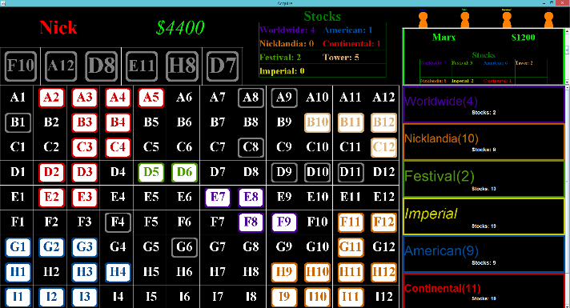
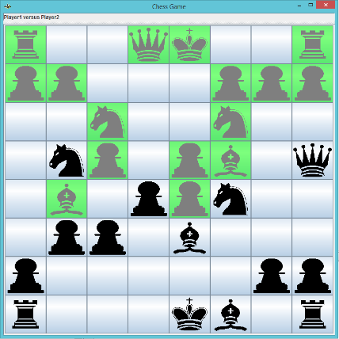
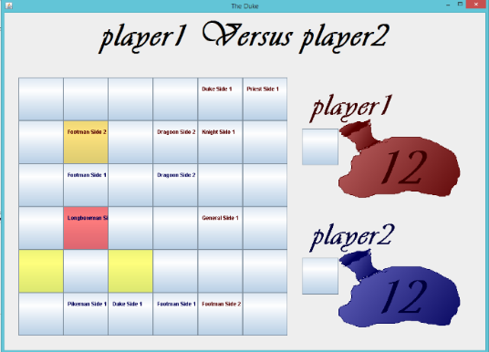
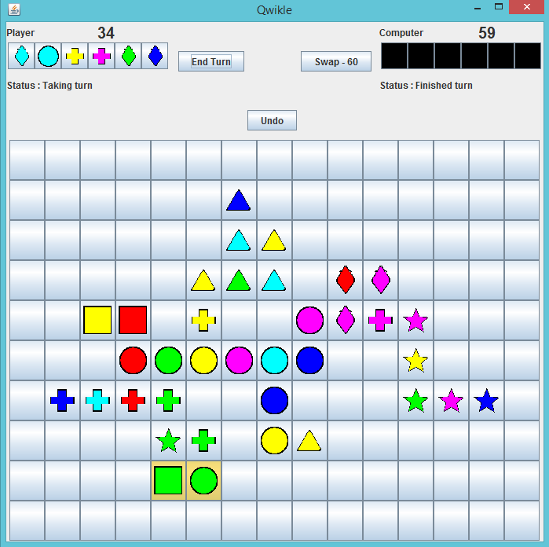
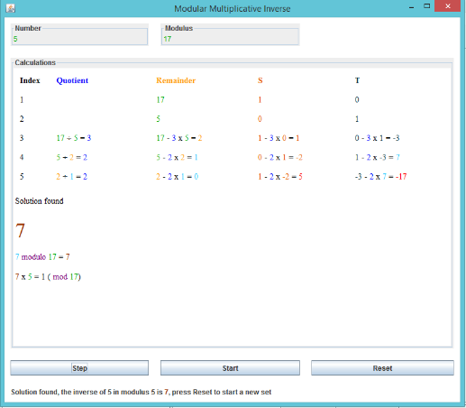
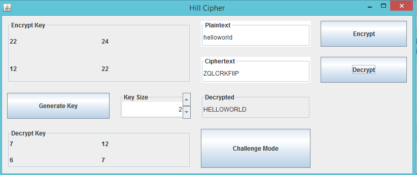
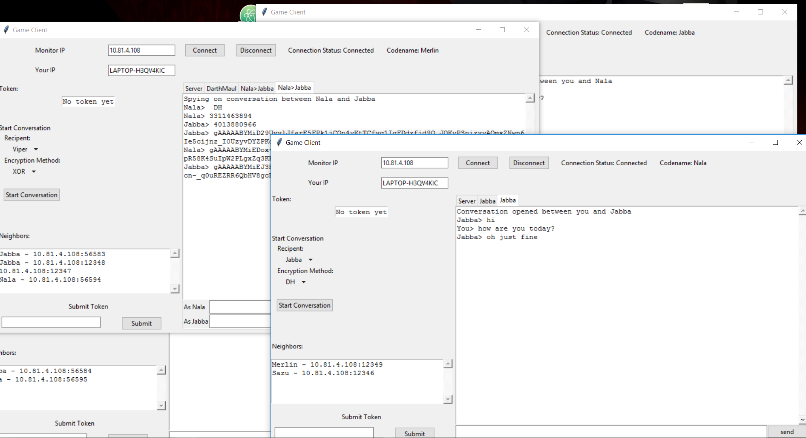

<<<<<<< HEAD
<<<<<<< HEAD
<<<<<<< HEAD
=======
=======
>>>>>>> parent of 7c2dfc0... Removed Herobrine
=======
>>>>>>> parent of 7c2dfc0... Removed Herobrine
<<<<<<< HEAD
<<<<<<< HEAD
>>>>>>> parent of 7c2dfc0... Removed Herobrine
=======
>>>>>>> parent of 7c2dfc0... Removed Herobrine
=======
>>>>>>> parent of 7c2dfc0... Removed Herobrine
<<<<<<< HEAD
<<<<<<< HEAD
<<<<<<< HEAD

Year-In Reviews
=======Projects
>>>>>>> parent of 7c2dfc0... Removed Herobrine =======
<<<<<<< HEAD
<<<<<<< HEAD
<<<<<<< HEAD
First Year
======= ======= >>>>>>> parent of 7c2dfc0... Removed Herobrine ======= >>>>>>> parent of 7c2dfc0... Removed HerobrineThese are my projects
-
Player Count Message (2014 to 2015)
A software modificaiton for minecraft servers to allow players the ability to modify the server's look in the load screen.
-
Research Experience for Teachers Project at The University of Cincinnati (2015 and 2016)
Research projects done with Dr. Franco at the University of Cincinnati (UC) as part of the Research Experience for Teachers (RET) program during summer 2015 and then summer 2016.
-
Minecraft Playscape Project at The University of Cincinnati (summer 2014)
Minecraft Playscape at UC Artlitt. I designed software to track kids' actions in the Video Game Minecraft and later interpret the data as part of a research project. This was done over the summer of 2014 with Arlitt at UC. This project was later presented at the 2014 IT@UC conference.
-
MIDI Improvisor (Oct 2016)
As part of the Hackathon at UC in october 2016, I worked with Vuong Khuat, Wyatt French to create a program that would take a MIDI file and improvise. A MIDI file is a musical file that saves note sounds.
Java Projects (2012 to Present)
Some random projects of games I made using java to familiarize myself with the language.
Java Projects
(2012 to present)
Chess, Duke, Qwirkle and Acquire Games implemented in Java. Below are screenshots of the GUI’s of these games being played. Acqurie is uploaded to my Github account. I completed these random projects to make board games as more of a hobby but it introduced me to programming and allowed me to solve some quite complicated graphical problems.
Acquire
Acquire is a game made by Avalon Hill, for a full description of the project, go to it's github page.
Chess
This is simply a classic game of chess, nothing special.
Duke
This is a game published by Catalyst Game Labs and is similar to chess but has varied pieces and turn options.
Qwirkle
Qwirkle is a simple pattern matching game published by MindWare. I used this game as a project in one of my classes in high school and helped the teacher instruct the other students by building GUI elements while the other students coded sections of the game.
back to top
Player Count Message
(2014 to 2015)
Player Count Message (pcm) is a 'plugin' for minecraft bukkit software. A plugin is a collection of java files that changes how the minecraft software interacts with users. This plugin created an animated message that appeared on the player's screen when the decided whether or not to connect to the server. The plugin is hosted on Bukkit's forums. The project page gives a more detailed explination on how the project functions and what the program does. Below is an image of the project in action (animaged of course). An update to the software prevented the feature that allowed animated messages and discouraged further development. Then the project was abandon and the source code was added to the githug. The project is uploaded to github in two formats for the bugee server software and the bukkit server software.
--- pcm bukkit github --- pcm bungee github ---
The project has been downloaded over 45,000 times as of November 2016. In addition, the project has been translated into over 5 different languages by people who wanted to promote and use the plugin. Below are pictures of the youtube videos showing how to use the translated plugin. This page has a list of the youtube vidoes that translate the plugin into different languages.
Tutorial video by lockeMinecraft (que1124)
Tutorial video by VariationVault
Tutoriel vidéo par GAmerHD Quatre
Tutorial de vídeo por Yan Francisco Pérez
Видео урок от BOBARA333BG
هنا هو تعليمي باللغة العربية لoMrLuckyX جعلت واحدة. ليس هناك ترجمة للالمساعد
back to top
RET Projects
(summers of 2015 and 2016)
I worked with a professor at UC over the 2015 and 2016 summer with local high school professors to create a curriculum to teach the math and ethics of Cybersecurity to high school students. I created applets in Java and python to display concepts and allow students to train. In 2015, I focused on learning encryption and cryptogrpahy whiel in 2016, I mostly focused owas able to teach cryptography to the high school teachers. In addition, I made a project with the Graduate Research Assistant on the project and the source code of this project is on github: A-Game-Of-Codes. Below are some pictures of some applications parts of the project.
Modular Inverse Calculator

Cipher applet

Game of Codes applet

back to top
Minecraft Playscape Project
(summer 2014)
Minecraft Playscape at UC Artlitt. I designed software to track kids’ actions in the Video Game Minecraft and later interpret the data as part of a research project. Below is the poster presented at the IT@UC 2014 conference.
back to top
MIDI Improvisor
(Oct 2016)
Now the program can read in either specially written text files that represent a music sheet or from midi files with different tracks for chords and the melody. Then, the program will take the results from this data and use the melody and chords to compose a song.
In order to use the application, you can use the GUI launched when the FakeMidi.jar is executed (found in builds). The GUI will present the user with two text boxes for input and output. The path of the input can be directly typed into the load box or it can be selected using the dialog created when the select file button is pressed. Once a file is selected, it must be loaded by pressing the load file button. After the file is loaded, it can be exported to the file specified in export file text box. A export location can be specified using the select export button.
The full project is posed to devpost.
This is the project's output
back to top
<<<<<<< HEAD <<<<<<< HEAD >>>>>>> parent of 7c2dfc0... Removed Herobrine ======= >>>>>>> parent of 7c2dfc0... Removed Herobrine ======= >>>>>>> parent of 7c2dfc0... Removed Herobrine
<<<<<<< HEAD
<<<<<<< HEAD
<<<<<<< HEAD
To contact me, my email is brimaltbie@gmail.com
Copyright © 2016 Nicholas Maltbie, Brian Maltbie
======= ======= >>>>>>> parent of 7c2dfc0... Removed Herobrine ======= >>>>>>> parent of 7c2dfc0... Removed HerobrineWant to see the source code of this page on github?
Copyright © 2016 Nicholas Maltbie
<<<<<<< HEAD <<<<<<< HEAD >>>>>>> parent of 7c2dfc0... Removed Herobrine ======= >>>>>>> parent of 7c2dfc0... Removed Herobrine ======= >>>>>>> parent of 7c2dfc0... Removed Herobrine-
<<<<<<< HEAD
<<<<<<< HEAD
<<<<<<< HEAD
 =======
=======
>>>>>>> parent of 7c2dfc0... Removed Herobrine
=======
>>>>>>> parent of 7c2dfc0... Removed Herobrine
=======
=======
>>>>>>> parent of 7c2dfc0... Removed Herobrine
=======
>>>>>>> parent of 7c2dfc0... Removed Herobrine
-

-

-
<<<<<<< HEAD
<<<<<<< HEAD
>>>>>>> parent of 7c2dfc0... Removed Herobrine
=======
>>>>>>> parent of 7c2dfc0... Removed Herobrine
=======
>>>>>>> parent of 7c2dfc0... Removed Herobrine